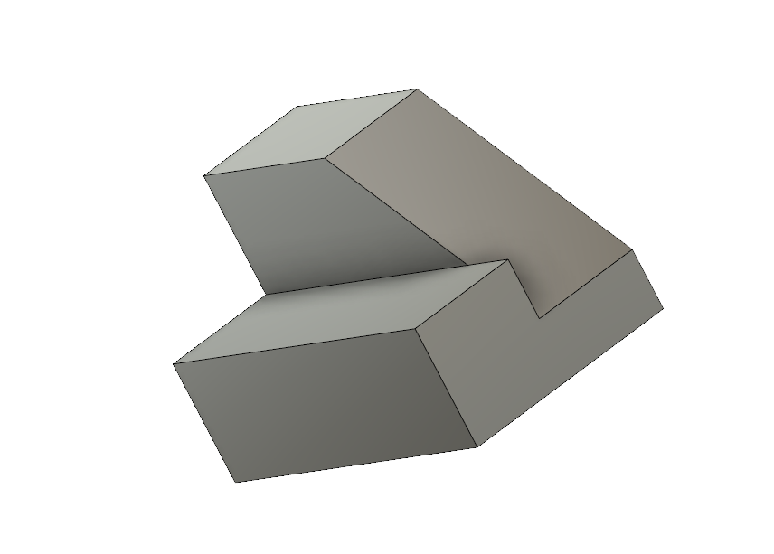

These are practice sketches on the Computer Aided Design (CAD) software, Auto Desk 360. To practice CAD, we chose 6 objects to recrate
in the program. We also had to create our own laptop stand design in AutoDesk 360. It was diffcult to make a stand what was stable and the right
size to fit a large laptop. The first design was just a solid block which was too bulky, and if created would be too heavy. The final design
is stable, light weight and it can fit all types of laptops and tablets.

Return